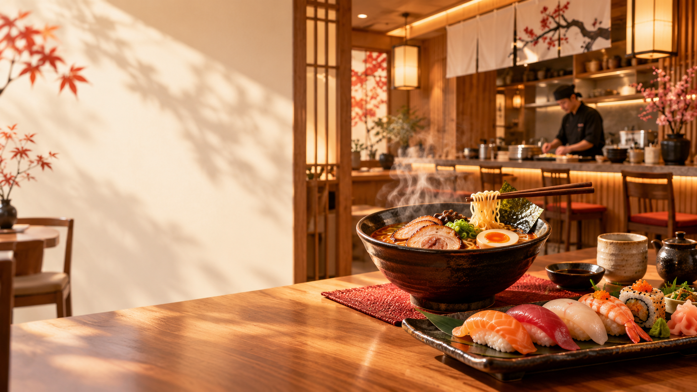
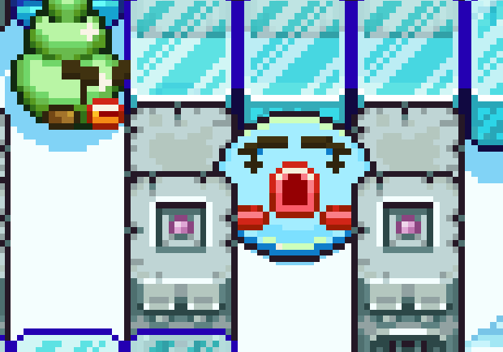
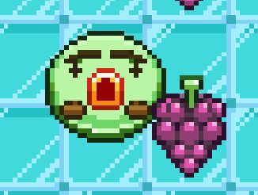

YakiSora
Кафе, которое создают люди. Разнообразное меню на любой вкус и бюджет. Не подошло ничего уже существующего в ассортименте? Создайте своё собственное блюдо из доступных ингредиентов.
Посмотреть меню
Как это работает
Выбери еду →
Укажи время, к которому приготовить →
Забери заказ
Собери своё блюдо

Составь свой собственный вариант любимого блюда из представленных ингредиентов.
YakiSora Community

Конкурсы блюд от комьюнити, тематические форумы и многое другое.